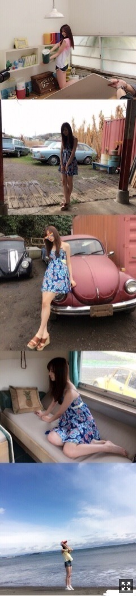
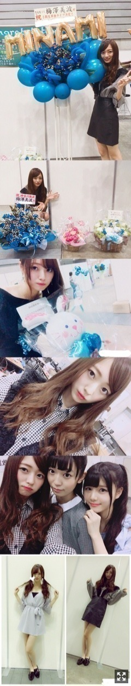
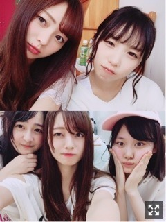

一歩さがってみる。梅澤美波
みなさまこんにちは！！
乃木坂46 ３期生の
梅澤美波です！！！
長いです今日も( .. )
珍しい髪型〜
4月23日横浜個別握手会にて
最近さ、暖かくなってきて
すごく外の空気の匂いが好きなんです
あの時の匂いと似てるな〜ってなる
高校のとき、テスト期間中とかでさ、
学校が午前中で終わって
天気のいい日に自転車で帰ってた時の匂いに似てるの〜
マニアックすぎてよくわからないよね( .. )（笑）
匂いって中毒性がすごい( ¨̮ )
4月22日に発売された
アップトゥボーイさんの
私の初のソログラビア見てくださいましたか？？
発売日のつぎの日に
握手会があったのもあって
褒めてくれる方がすごくいてねめちゃくちゃ嬉しかったの（ ｉ _ ｉ ）
ソロってなかなかないし
初めてってすごく貴重だからさ( ¨̮ )
オフショット載せます！！
たくさん載せたいのあって、
でもそんなに載せられないから
縦長になっちゃうけど、見にくくてごめんなさい。
雰囲気だけでも伝われば！と思ってたくさん繋げたよ( ¨̮ )

１枚目、
かわいい海の家みたいなね
すごい可愛いとこで撮っていただきました！幸せだったなあ〜
２枚目、３枚目
可愛い青のワンピース！！
３枚目半目だから隠しちゃったけど雰囲気だけ伝わればと思って載せました！
４枚目
憧れのキャンピングカーの中！
５枚目
この日は朝からみぞれが降ってて
めちゃくちゃ寒くて、スタジオで撮影してるときも雨が降ってたから
海での撮影ダメかもってなってたんだけど
まさかの晴れたの！幸せ（ ｉ _ ｉ ）
晴れ女なのかもしれない( ¨̮ )
いつもよりメイクも薄めで
普段とは違う私が見られると思うので
ぜひ、お手に取ってみてください！！
みり愛さんも一緒に載ってます( ¨̮ )♡
またソログラビアできるように頑張りたい！
握手会ありがとうございました！！
4月23日の横浜個別握手会のこと！
１部パジャマ着たのに
パジャマって気づいてくれる方が少なくって悲しかったよ( .. )
２部はオフショルにいつもの真っ黒コーデ！！
５部はももことアディダスお揃いしました〜！！好評でうれしかった！またやるね！
4月29日の横浜個別握手会のこと！
１部はNOGIROOMで着たパジャマ着ました！
この前の握手会はね
生ドルさんのツインテールの話題が
めちゃくちゃ多かった！！
みんなツインテール好きすぎかよ〜( .. )（笑）
１部２部、５部だから
朝早くて寝坊してきちゃう方多かった( .. )
早く起きてよ〜会いに来てね〜

握手会の写真詰め込んだ！！
最後のが着た服です〜( ¨̮ )
お花ありがとね〜（ ｉ _ ｉ ）
幸せいっぱい。
お花出したよ〜って方も来てくださって
直接お礼言えるのも本当に嬉しい。
やっぱ握手会すきだー！！
一緒に上目指そうねとかさ
どう頑張ったらいいかとかさ
みんながアドバイスくれたり
直接言ってくれるから
本当にやる気で満ち溢れるの。
この方達がいればずっとがんばれる
この方達に喜んでもらいたいって
頑張ろうって思えるの！( ¨̮ )
みんなもすごく語ってくれてさ、
泣きそうになってるよいつも（笑）！
伝わってるよ〜ありがとう
本当に好きだな〜って思ったよ、握手会
あと１週間になりました！
こられる方、
盛り上がってくださったら嬉しいなあ
サイリウムカラーは
青×水色です！！
アイアシアター、客席奥まで見えるから
良かったら振ってください( ¨̮ )みつけるね
梅ちゃんの方がいいのに！
とか
反対派の方もいると思いますが
また後々考えます！！
呼んでくれたら嬉しいなあ

与田とある日の写真〜
与田かわいいやろ〜
下のは今日のレッスン終わり！！
めちゃくちゃ踊って汗かいてる( .. )
はづきとみづき◎
めちゃくちゃまえにいるわけではないし
どっちかっていうと後ろの方が多いんだけど
位置とか関係なく、見ててほしいなあ
ダンス苦手だったけど
自分なりに本当にがんばったし
楽しいって思えてるの、今
みんなが見てくれないと見てくれる人居なくなっちゃうから( .. )
いろんな壁にぶつかったし
悔しい思いだってしてない訳じゃなくて
淡々とこの期間乗り越えられた訳では無いけど
すごく頑張ってます！
みんながいたから乗り越えられたのもあるよ！握手会もあったので。
なかなかないことだと思うし
もしかしたら最初で最後かもしれないし
だから悔いのないように挑もうと思います。
今の私達にしか出せないパワーとか
パフォーマンスとか
絶対あると思うし
そうゆうものが見に来てくれた方に伝わればいいなって思います
思いで作ろうな〜( ¨̮ )
汗でビショビショで
ぐちゃぐちゃな姿を見ても
嫌いにならないでね( ¨̮ )（笑）
それぐらい全力で挑むので！！
3rdアルバム｢生まれてから初めて見た夢｣に、
３期生二つ目の楽曲
『思い出ファースト』
３期生も参加させていただいた全体曲
『設定温度』
が収録していただくことになりました！
どちらも本当に良い曲で
とても好きな曲！！
解禁までお楽しみに〜☺︎
解禁されたらまた詳しく書くね( ¨̮ )
今週末は名古屋で
２日間握手会！！
個別握手会ある方は
待ってるね〜( ¨̮ )
何着ようかな〜
全国握手会もあるので、
少しでも気になってるよって方はぜひ！
コメントありがとうね、
握手会来た方とか、近況報告してくださったりとか、たくさんたくさん嬉しいです！
なんでも書いていってね〜◎
質問コーナーは今回はお休みします、ごめんね
次回また！！
髪の毛で遊んでた！
じゃあまたね
ばいばい
皆様が応援してて後悔しないような
そんな人になりたくて頑張ってるから
全力で突っ走るので
見ててね〜
みんな〜、会えるまで、がんばろな
Original：https://www.nogizaka46.com/s/n46/diary/detail/38421?ima=0528&cd=MEMBER